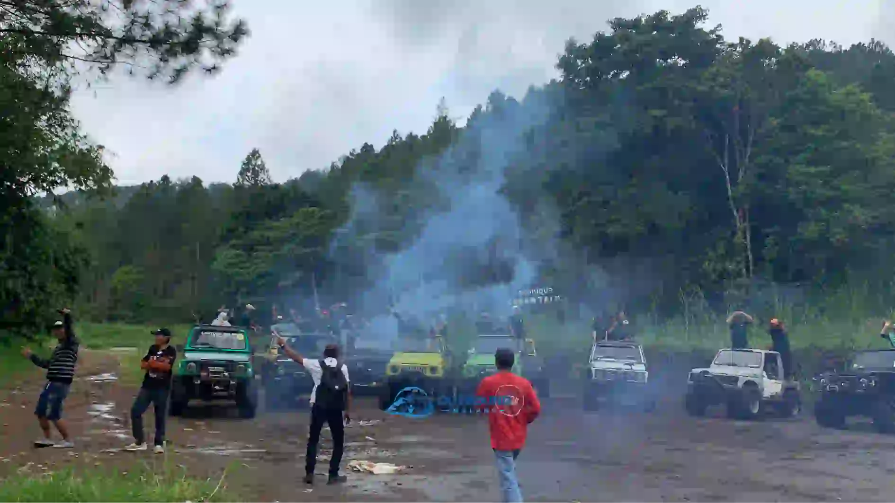
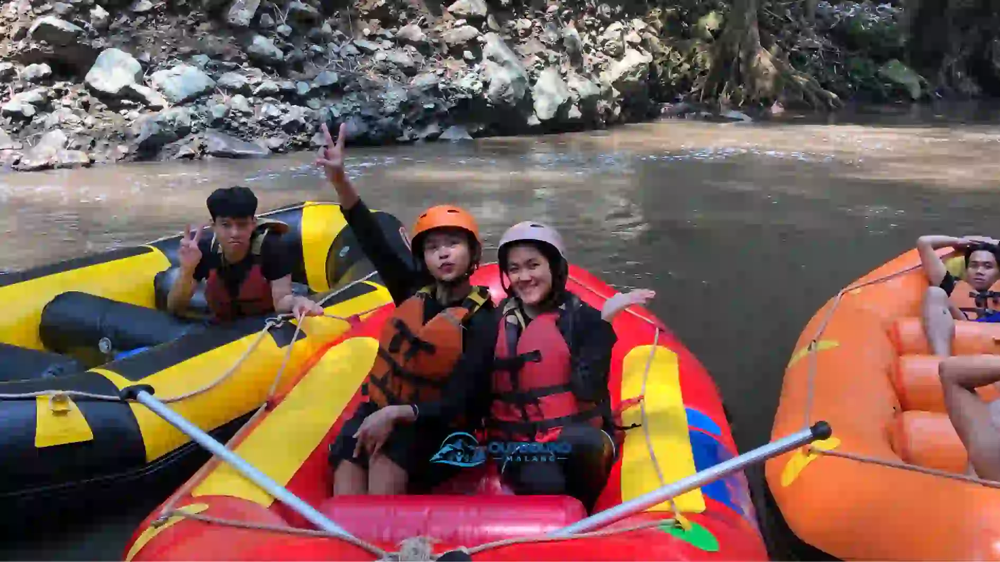

7 Lokasi Outbound Terbaik di Malang Raya Tahun 2024
Memilih lokasi outbound yang tepat sangat krusial untuk kesuksesan acara Anda. Lokasi yang ideal harus didukung oleh fasilitas memadai, akses yang mudah, dan area lapangan yang luas. Berikut adalah 7 rekomendasi lokasi terbaik dari kami.
1. Kawasan Wisata Coban Rondo
Berada di Pujon, Kabupaten Malang, Coban Rondo tidak hanya menawarkan air terjun setinggi 84 meter, tetapi juga memiliki kawasan camping ground dan lapangan luas yang dikelilingi hutan pinus. Lokasi ini sangat direkomendasikan untuk Family Gathering karena suasananya yang teduh dan asri.
2. Pujon Rafting & Camp
Bagi perusahaan yang mencari tantangan adrenalin, Pujon adalah destinasi tepat. Selain lapangan hijau untuk fun games, lokasi ini memiliki akses langsung ke sungai untuk kegiatan Arung Jeram (Rafting).

3. Taman Rekreasi Selecta
Taman legendaris di Kota Batu ini menawarkan perpaduan taman bunga hamparan luas dan fasilitas kolam renang. Sangat cocok untuk peserta dari segala rentang usia, terutama rombongan keluarga karyawan.
4. Kebun Raya Purwodadi
Terletak di jalur utama Surabaya-Malang, Kebun Raya Purwodadi menawarkan area padang rumput datar yang sangat luas. Sangat ideal untuk perusahaan yang membawa rombongan besar (lebih dari 500 peserta) karena area parkir dan mobilitasnya sangat leluasa.
5. Kasembon Rafting Area
Kasembon menawarkan debit air sungai yang stabil sepanjang tahun, menjadikannya surganya para pecinta rafting. Di sekitar basecamp-nya juga terdapat fasilitas permainan seru seperti Paintball.
6. Taman Rekreasi Sengkaling
Berada di perbatasan Kota Malang dan Batu, Sengkaling menonjolkan wahana wisata air. Sangat tepat untuk konsep outbound santai berkonsep rekreasi keluarga.
7. Wana Wisata Coban Talun
Terkenal dengan penginapan berkonsep Apache Camp dan Paguon Camp, Coban Talun sangat ideal jika Anda ingin mengadakan sesi team building 2 Hari 1 Malam. Di sini Anda juga bisa menyewa Jeep untuk kegiatan Offroad.
FAQ Seputar Lokasi Outbound

Indriana Safitri
Konsultan HR & Event Specialist yang telah membantu ratusan perusahaan merancang program peningkatan kualitas SDM melalui metode experiential learning.